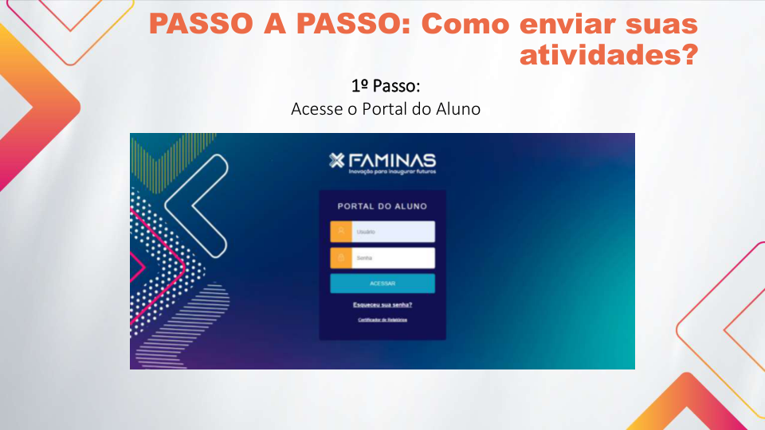
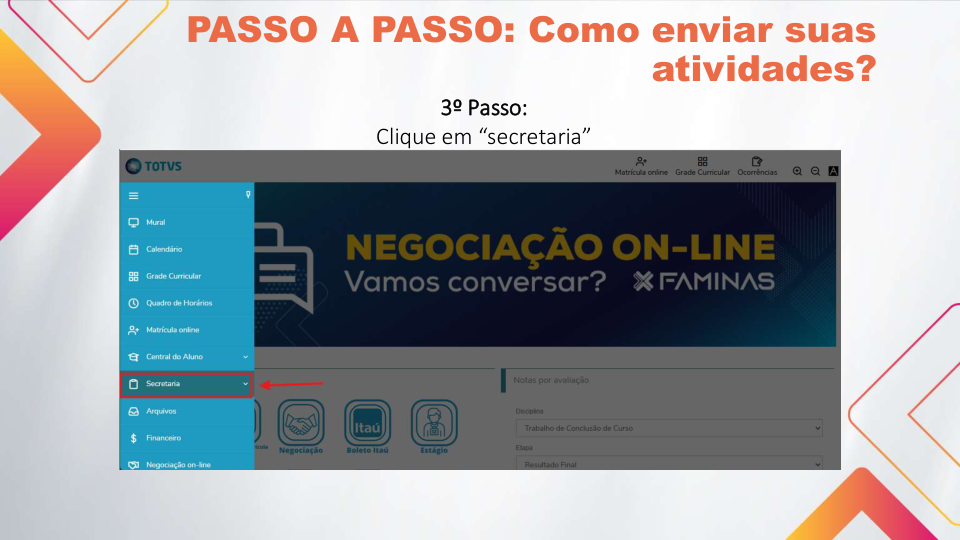
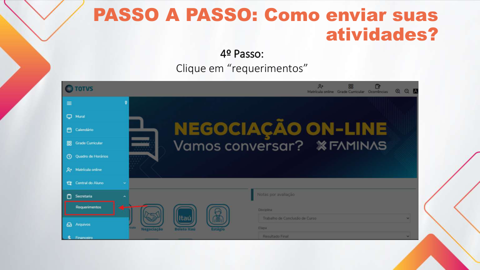
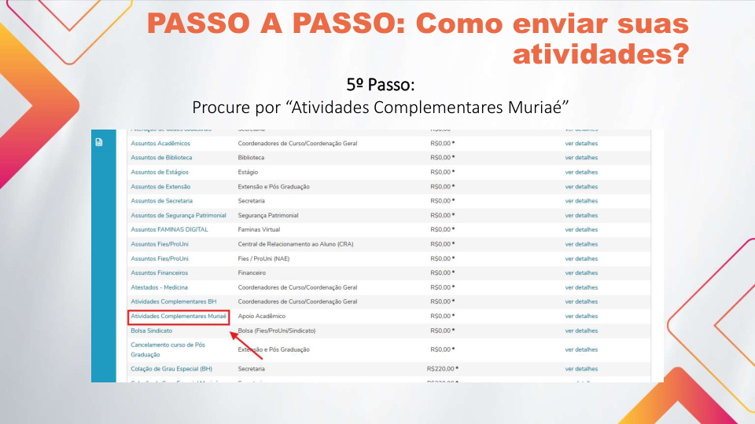
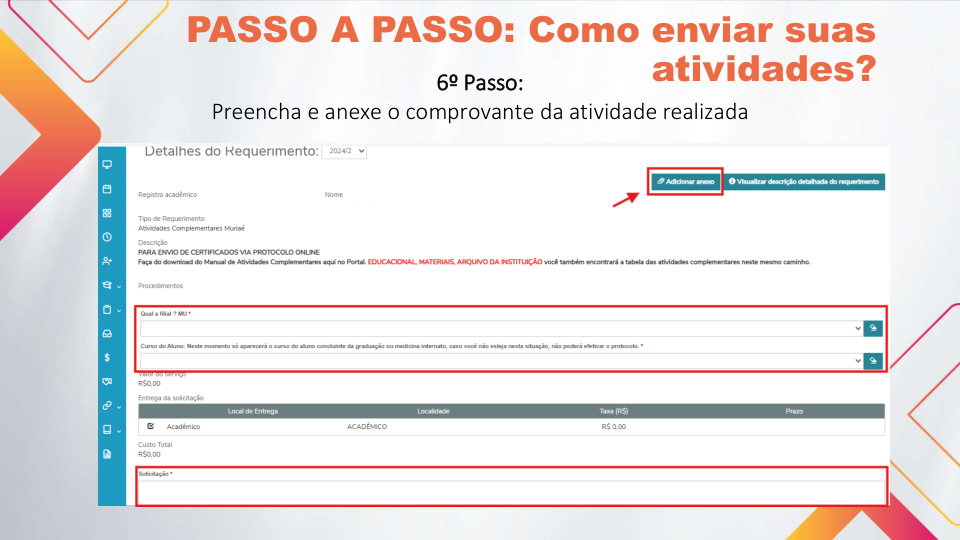

Setor: Horas Complementares
Encontre as orientações do guia institucional sobre atividades complementares: quais atividades realizar, como comprovar, enviar certificados e acompanhar sua carga horária.
Suas horas, seu caminho
Orientações extraídas do Guia de Orientações: Atividades Complementares disponibilizado pela FAMINAS.
O que são atividades complementares?
São atividades extracurriculares que podem ser desenvolvidas desde o primeiro semestre e ajudam a completar a carga horária prevista na matriz curricular do curso. Incluem experiências práticas, estudos, pesquisas e projetos de extensão.
O guia institucional informa que as atividades complementares são obrigatórias. A quantidade total exigida depende da matriz curricular de cada curso.
Acessar Portal do AlunoQuais atividades são aceitas?
Confira os limites por categoria apresentados na página 8 do guia oficial. O limite diário informado é de 12 horas complementares.
| Tipo de atividade | Limite indicado |
|---|---|
| Publicações | 100 h |
| Projetos de extensão | 100 h |
| Eventos acadêmicos | 100 h |
| Cursos presenciais | 100 h |
| Cursos EAD | 60 h |
| Iniciação à docência | 100 h |
| Representação estudantil | 60 h |
| Participação em ligas acadêmicas | 100 h |
| Idiomas e informática | 60 h |
| Domínios conexos | 80 h |
| Estágios não obrigatórios | 100 h |
| Outras atividades mediante análise | 40 h |
Os limites por categoria não representam a carga horária total obrigatória do seu curso. A validação é institucional.
Como comprovar suas atividades?
O guia aceita certificados, declarações ou outros registros, desde que estejam legíveis, sem rasuras e contenham:
- Nome completo
- Atividade realizada
- Carga horária
- Data ou período de realização
- Assinatura do emissor
- Local
- Link, QR Code e/ou código de verificação, para documento digital
Como enviar seus certificados?
Siga o procedimento demonstrado nas páginas 10 a 15 do guia institucional. Clique nas imagens para ampliá-las.
- Acesse o Portal do Aluno
Entre no portal acadêmico com suas credenciais.

- Abra o menu
No sistema, abra o menu principal.
- Selecione Secretaria
Acesse a opção “Secretaria”.

- Entre em Requerimentos
Selecione “Requerimentos”.

- Localize o requerimento
Procure “Atividades Complementares Muriaé”, como indicado no guia.

- Preencha e anexe
Informe os dados solicitados e anexe o comprovante da atividade realizada.

Onde consultar minhas horas?
- Acesse o Portal do Aluno.
- Na página inicial, clique em Grade Curricular.
- Procure Componente curricular: Atividades Complementares.
- Mais abaixo, consulte o resumo em Componentes Curriculares.
Calculadora de horas
Registre suas atividades para obter uma estimativa por categoria. Esta ferramenta não envia certificados, não acessa o Portal do Aluno e não substitui a análise da FAMINAS. Os registros não são armazenados.
| Categoria | Informadas | Estimadas |
|---|---|---|
| Nenhuma atividade adicionada. | ||
A ferramenta aplica somente os tetos por categoria do guia. O limite de 12 h diárias depende das datas de realização e deve ser verificado separadamente. A carga horária reconhecida oficialmente pode ser diferente.
Perguntas frequentes
Quantas horas preciso cumprir?
O total exigido está definido na matriz curricular do seu curso. Consulte-a no Portal do Aluno.
Posso começar no primeiro semestre?
Sim. O guia orienta que as atividades complementares podem começar já no 1º semestre.
Um curso EAD pode contar?
O guia lista cursos EAD com limite de 60 horas na categoria, sujeito à análise institucional.
Quais informações o certificado deve conter?
Nome completo, atividade, carga horária, data/período, assinatura, local e, se digital, mecanismo de verificação.
Como acompanho as horas já registradas?
No Portal do Aluno, acesse Grade Curricular e consulte o resumo de Componentes Curriculares.
Qual é o prazo de análise?
O guia disponibilizado não informa prazo de análise. Consulte a Coordenação Acadêmica ou a coordenação do seu curso.
Ainda ficou com alguma dúvida?
O guia orienta procurar a Coordenação Acadêmica ou a coordenação do seu curso. Não há telefone ou e-mail específico informado no documento.
Desenvolvido por: Murilo Neves Da Silva, Bernardo Brenini, Marcos Vinicius e Gabriel Magalhaes.
Fonte: FAMINAS, Guia de Orientações: Atividades Complementares, páginas 3–15. Consultar o guia completo (PDF).